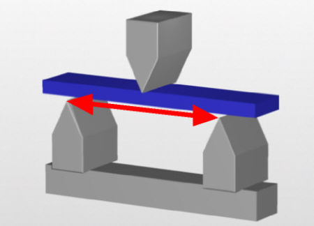
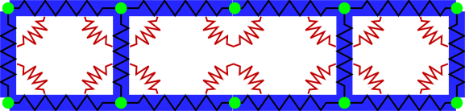
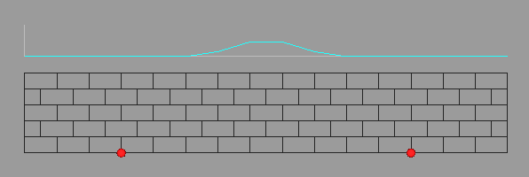
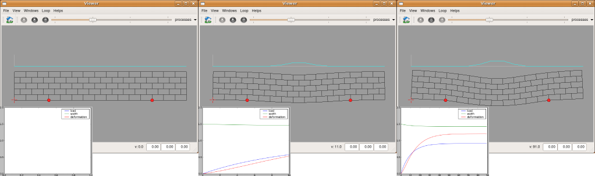

Description
This simulation describes the evolution of the shape of a tissue when subjected to a classical 3 points bending experiment.

The mechanical properties of the material constituting the tissue will be represented by a set of springs, both linear and angular ones.

The interaction of the tissue with the 2 points below will be represented be a fixed point condition, meaning that the two points touching the support are not allowed to move at all. The third point, above the tissue, will push on it with a force distributed on a small surface on top of the tissue.

Algorithms
Tissue Structure
The tissue structure in its rest state is represented by a mesh.
Mechanics
To account for the mechanical properties of the tissue, each point will be given a mass and a set of springs will be defined.
Each edge will stands for a linear spring.
where K is a stiffness parameter. In each point, a set of circular spring are added to maintain the angles around this particular point.
where L is another stiffness parameter (radial stifness). Interactions with the world are defined in a bound function.
where fixed_points list the two interaction points with the support below the tissue and top_points are all the points on top of the tissue subjected to load. If the evolution is quasistatic, each step of the simulation much reach a mechanical equilibrium.
in which dt_meca is a time constant used to perform the mecanical integration and 1000 is an estimated number of steps to perform to reach this equilibrium.
Simulation
The simulation by itself is just a repetition of the step of mechanical equilibrium. Each time, however, the force (load) is increased a little up to a maximum value. All above operations have been written in
simu.py, the main simulation file. First launch
create_tissue.py to create a pseudo-grid tissue the first time.
user@computer:$ python create_tissue.py
then launch (only once)
compile_ui.py to create the gui associated with this particular simulation.
user@computer:$ cd GUI
user@computer/GUI:$ python compile_ui.py
Last launch
simu.py to display the mechanical evolution of the tissue under load (press play to run the simulation). Due to the number of computation needed to reach a stable state at each time step, simulation speed will be very slow.
user@computer:$ python simu.py

Exercices
To go further :
- change the stiffness constant K and see what happens in terms of bending. If K is too big you may need to decrease dt_meca to avoid numerical instabilities
- change the maximal value of the load and see what happens in terms of bending. If the load is too big you may need to decrease dt_meca to avoid numerical instabilities
- change the number of steps to reach mechanical equilibrium